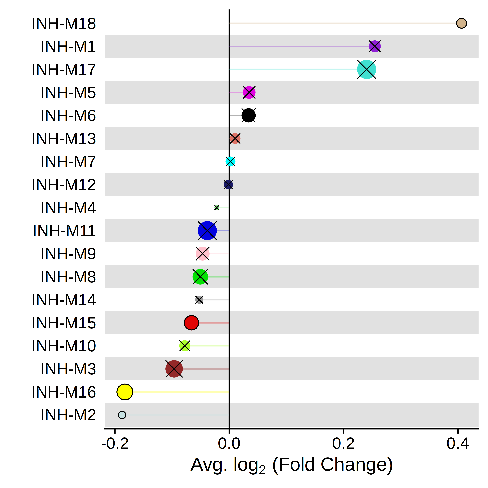
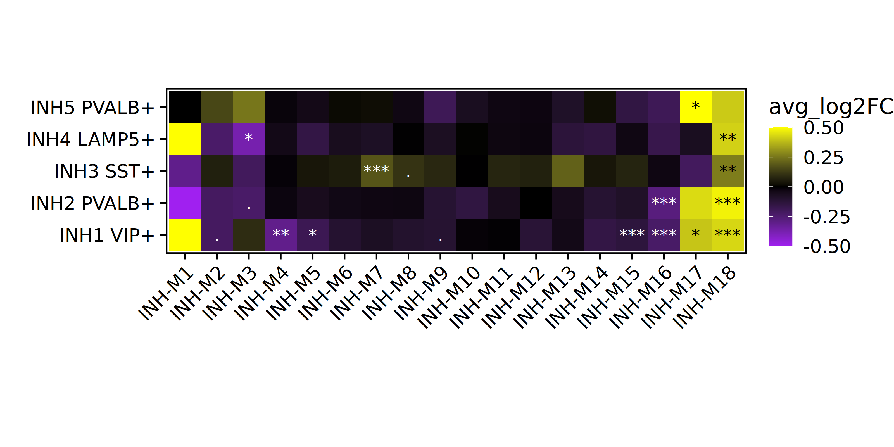
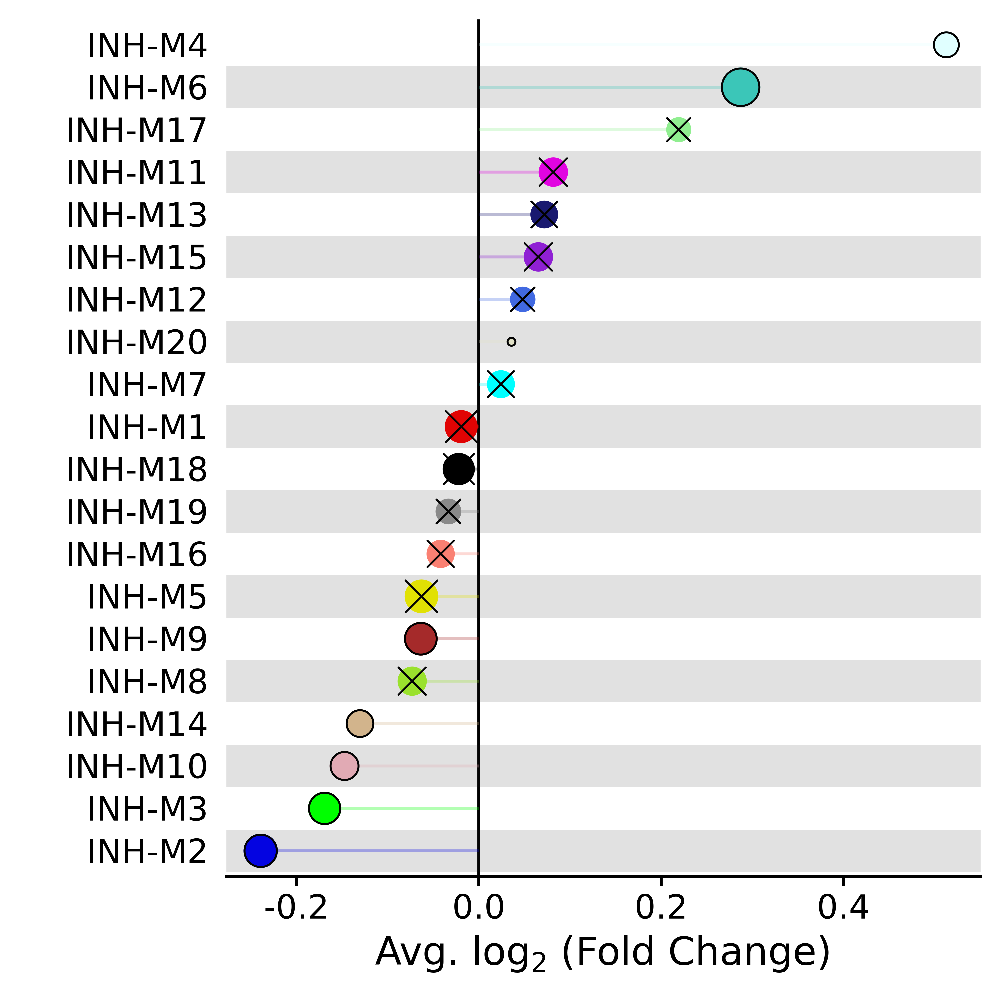

Differential module eigengene (DME) analysis
Source:vignettes/differential_MEs.Rmd
differential_MEs.RmdCompiled: 27-02-2024
Source: vignettes/differential_MEs.Rmd
In this tutorial, we demonstrate how to perform differential expression analysis for our co-expression network modules. We refer to this analysis as “differential module eigengene” (DME) analysis, which reveals modules that are up- or down-regulated in specified groups of cells. For this analysis we take advantage of Seurat’s FindMarkers function to perform differential testing, so we have access to all of the same options.
First we load the single-cell dataset processed through the basics tutorial and the required R libraries for this tutorial.
# single-cell analysis package
library(Seurat)
# plotting and data science packages
library(tidyverse)
library(cowplot)
library(patchwork)
library(ggrepel)
# co-expression network analysis packages:
library(WGCNA)
library(hdWGCNA)
# using the cowplot theme for ggplot
theme_set(theme_cowplot())
# set random seed for reproducibility
set.seed(12345)
# re-load the Zhou et al snRNA-seq dataset processed with hdWGCNA
seurat_obj <- readRDS('Zhou_2020_hdWGCNA.rds')DME analysis comparing two groups
Here we discuss how to perform DME testing between two different groups. We use the hdWGCNA function FindDMEs, the syntax of which is similar to the Seurat function FindMarkers. Here we use the Mann-Whitney U test, also known as the Wilcoxon test, to compare two groups, but other tests can be specified with the test.use parameter.
Since the tutorial dataset only contains control brain samples, we will use sex to define our two groups. FindDMEs requires a list of barcodes for group1 and for group2. Further, we are only going to compare cells from the INH cluster since that is the group that we performed network analysis on.
group1 <- seurat_obj@meta.data %>% subset(cell_type == 'INH' & msex == 0) %>% rownames
group2 <- seurat_obj@meta.data %>% subset(cell_type == 'INH' & msex != 0) %>% rownames
head(group1)[1] "TCTTCGGCAAGACGTG-11" "ATTATCCGTTGATTCG-11" "CCACCTAGTCCAAGTT-11"
[4] "AGCGTATGTTAAGAAC-11" "GTAACTGTCCAGATCA-11" "CGATTGATCTTTACAC-11"Next, we run the FindDMEs function.
DMEs <- FindDMEs(
seurat_obj,
barcodes1 = group1,
barcodes2 = group2,
test.use='wilcox',
wgcna_name='INH'
)
head(DMEs)p_val avg_log2FC pct.1 pct.2 p_val_adj module
INH-M18 4.714924e-23 0.40637874 0.894 0.729 8.486863e-22 INH-M18
INH-M16 5.257311e-08 -0.18257946 0.850 0.935 9.463160e-07 INH-M16
INH-M2 7.565615e-05 -0.18746938 0.661 0.738 1.361811e-03 INH-M2
INH-M15 1.496899e-03 -0.06603535 0.969 0.977 2.694417e-02 INH-M15
INH-M10 1.513458e-02 -0.07774661 0.975 0.980 2.724224e-01 INH-M10
INH-M17 2.034644e-02 0.24035946 0.589 0.557 3.662360e-01 INH-M17We can visualize the results using the hdWGNCA functions PlotDMEsLollipop or PlotDMEsVolcano. First we make a lollipop plot to visualize the DME results.
PlotDMEsLollipop(
seurat_obj,
DMEs,
wgcna_name='INH',
pvalue = "p_val_adj"
)
This plot shows the fold-change for each of the modules, and the size of each dot corresponds to the number of genes in that module. An “X” is placed over each point that does not reach statistical significance.
For PlotDMEsLollipop, if we have other self-defined columns in the DMEs data frame, we can use group.by parameter to supply the column names and comparison arguments for one comparison group or a list of comparison groups for plotting. For example:
PlotDMEsLollipop(
seurat_obj,
DMEs,
wgcna_name='INH',
group.by = "Comparisons",
comparison = c("group1_vs_control", "group2_vs_control"),
pvalue = "p_val_adj"
) Alternatively, we can use PlotDMEsVolcano to make a volcano plot to show the effect size and the significance level together.
PlotDMEsVolcano(
seurat_obj,
DMEs,
wgcna_name = 'INH'
)
Looping through multiple clusters
We can run DME analysis in a loop to perform the comparison in multiple groups. Here we will loop through the 5 INH subclusters and run FindDMEs in each cluster.
# list of clusters to loop through
clusters <- c("INH1 VIP+", "INH2 PVALB+", "INH3 SST+", 'INH4 LAMP5+', "INH5 PVALB+")
# set up an empty dataframe for the DMEs
DMEs <- data.frame()
# loop through the clusters
for(cur_cluster in clusters){
# identify barcodes for group1 and group2 in eadh cluster
group1 <- seurat_obj@meta.data %>% subset(annotation == cur_cluster & msex == 0) %>% rownames
group2 <- seurat_obj@meta.data %>% subset(annotation == cur_cluster & msex != 0) %>% rownames
# run the DME test
cur_DMEs <- FindDMEs(
seurat_obj,
barcodes1 = group1,
barcodes2 = group2,
test.use='wilcox',
pseudocount.use=0.01, # we can also change the pseudocount with this param
wgcna_name = 'INH'
)
# add the cluster info to the table
cur_DMEs$cluster <- cur_cluster
# append the table
DMEs <- rbind(DMEs, cur_DMEs)
}Here we will use ggplot2 to make a heatmap showing the DME effect sizes. Since we are just using ggplot2 here you can easily customize this heatmap to suit your needs.
# get the modules table:
modules <- GetModules(seurat_obj)
mods <- levels(modules$module); mods <- mods[mods != 'grey']
# make a copy of the DME table for plotting
plot_df <- DMEs
# set the factor level for the modules so they plot in the right order:
plot_df$module <- factor(as.character(plot_df$module), levels=mods)
# set a min/max threshold for plotting
maxval <- 0.5; minval <- -0.5
plot_df$avg_log2FC <- ifelse(plot_df$avg_log2FC > maxval, maxval, plot_df$avg_log2FC)
plot_df$avg_log2FC <- ifelse(plot_df$avg_log2FC < minval, minval, plot_df$avg_log2FC)
# add significance levels
plot_df$Significance <- gtools::stars.pval(plot_df$p_val_adj)
# change the text color to make it easier to see
plot_df$textcolor <- ifelse(plot_df$avg_log2FC > 0.2, 'black', 'white')
# make the heatmap with geom_tile
p <- plot_df %>%
ggplot(aes(y=cluster, x=module, fill=avg_log2FC)) +
geom_tile()
# add the significance levels
p <- p +
geom_text(label=plot_df$Significance, color=plot_df$textcolor)
# customize the color and theme of the plot
p <- p +
scale_fill_gradient2(low='purple', mid='black', high='yellow') +
RotatedAxis() +
theme(
panel.border = element_rect(fill=NA, color='black', size=1),
axis.line.x = element_blank(),
axis.line.y = element_blank(),
plot.margin=margin(0,0,0,0)
) + xlab('') + ylab('') +
coord_equal()
p
One-versus-all DME analysis
Similar to the Seurat function FindAllMarkers, we can perform a one-versus-all DME test using the function FindAllDMEs when specifying a column to group cells. Here we will group.by each cell type for the one-versus-all test.
group.by = 'cell_type'
DMEs_all <- FindAllDMEs(
seurat_obj,
group.by = 'cell_type',
wgcna_name = 'INH'
)
head(DMEs_all)The output looks similar to FindDMEs, but there is an extra column called group containing the information for each cell grouping.
p_val avg_log2FC pct.1 pct.2 p_val_adj module group
EX.INH-M1 0 -10.313763 0.003 0.621 0 INH-M1 EX
EX.INH-M2 0 1.007115 0.670 0.445 0 INH-M2 EX
EX.INH-M3 0 2.641423 0.729 0.205 0 INH-M3 EX
EX.INH-M4 0 1.978553 0.910 0.246 0 INH-M4 EX
EX.INH-M5 0 2.447565 0.865 0.185 0 INH-M5 EX
EX.INH-M6 0 2.448315 0.877 0.209 0 INH-M6 EXNow we can plot the results with PlotDMEsVolcano
p <- PlotDMEsVolcano(
seurat_obj,
DMEs_all,
wgcna_name = 'INH',
plot_labels=FALSE,
show_cutoff=FALSE
)
# facet wrap by each cell type
p + facet_wrap(~group, ncol=3)
Using ModuleScores instead of MEs
We can also perform differential analysis using module expression scores instead of module eigengenes. These must first be calculated using the function ModuleExprScore, as shown below.
seurat_obj <- ModuleExprScore(
seurat_obj,
n_genes = 25,
method='UCell'
)Next we can perform differential analysis using these module scores by specifying features = 'ModuleScores' in the FindDMEs function.
group1 <- seurat_obj@meta.data %>% subset(cell_type == 'INH' & msex == 0) %>% rownames
group2 <- seurat_obj@meta.data %>% subset(cell_type == 'INH' & msex != 0) %>% rownames
DMEs_scores <- FindDMEs(
seurat_obj,
features = 'ModuleScores',
barcodes1 = group1,
barcodes2 = group2,
test.use='wilcox',
wgcna_name='tutorial'
)
p <- PlotDMEsLollipop(
seurat_obj,
DMEs,
wgcna_name = 'tutorial',
pvalue = "p_val_adj"
)
p